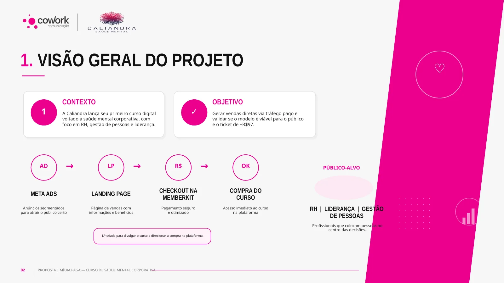
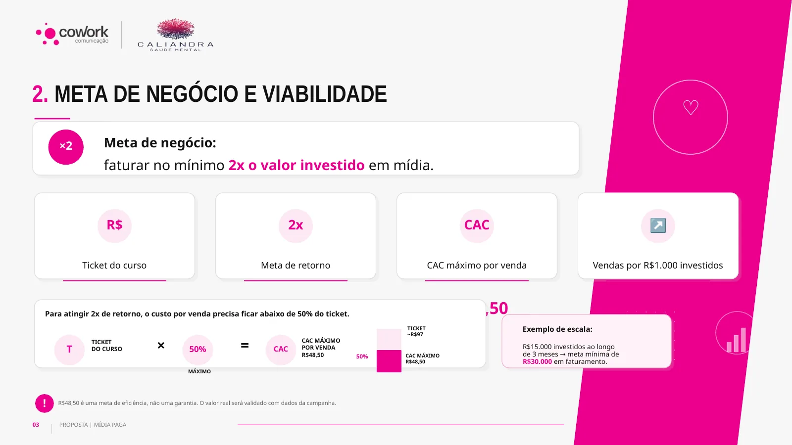
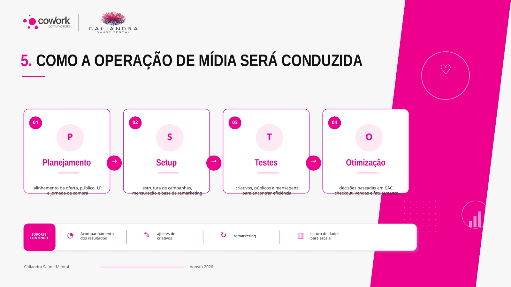

Validar antes de escalar.
Estratégia de lançamento para o primeiro curso digital de saúde mental corporativa da marca, construída a partir de público, jornada, ticket e um critério explícito de viabilidade.
Um produto novo não precisava começar com escala.
A Caliandra preparava seu primeiro curso digital voltado a RH, Gestão de Pessoas e Liderança. Antes de aumentar investimento, o plano precisava responder uma pergunta simples: a oferta consegue adquirir compradores dentro de uma economia sustentável?

Meta Ads → landing page → checkout → compra.
A arquitetura foi propositalmente simples. A mídia deveria atrair o público certo, a LP explicar valor e o checkout da Memberkit concluir a compra. Essa simplicidade facilita identificar onde a jornada perde eficiência.
O critério de escala precisava existir antes do teste.
Com ticket de aproximadamente R$97 e objetivo de buscar retorno de 2×, o plano definiu R$48,50 como CAC máximo de referência. O próprio material deixa explícito que isso é uma meta de eficiência — não uma garantia.

Teste controlado primeiro. Crescimento condicionado depois.
A fase 1 propôs R$2.000 a R$3.000 em duas a três semanas para medir CAC real, checkout e qualidade do público. A fase 2 só aconteceria se os dados sustentassem a escala, com referência de aproximadamente R$15 mil em três meses.

